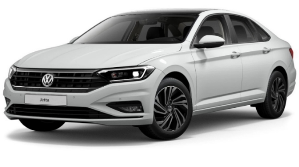

Volkswagen Jetta (укр. Фольксваген Джетта) — компактні седани і універсали, що виробляються концерном Volkswagen з 1979 року.
Всі покоління в сумі до моменту виходу сьомої генерації були продані в кількості 17,5 млн примірників.
Перше покоління седана Volkswagen Jetta (VW Typ 16) дебютувало на мотор-шоу у Франкфурті у 1979 році.
Трьохоб'ємну версію «першого» Гольфа довжиною 4195 мм в процесі розробки іменували Hummel (джміль), а коли вона пішла в серію, назву змінили на Jetta - на честь повітряної струменевої течії.

Машина масою 805-890 кг оснащувалася бензиновими двигунами об'ємом від 1,1 л до 1,8 л (50-112 к.с.), а також атмосферними і надувними дизелями 1.6 (54-70 к.с.). Деякі версії оснащувалися триступінчатим «автоматом».
Крім того, був варіант з кузовом купе.
«Друга» Джетта, що стала більшою за розмірами (4315-4385 мм) та вміщала вже п'ятьох людей, продавалася з тими ж типами кузовів в Європі з 1984 року, а в США - з 1985-го. Машина, виробництво якої було розгорнуто в мексиканському місті Пуебла і в Вестморленді, США, оснащувалася карбюраторними і інжекторними бензиновими двигунами об'ємом від 1,3 л до 2,0 л і дизелями 1.6. В 1988 році модель була злегка удосконалена: з'явилася повнопривідна версія Syncro з віскомуфтою в приводі задніх коліс, зникли кватирки в передніх дверях, а дзеркала переїхали до куточків вікон. Також трохи змінилися бампери й фальшрадіаторна решітка. Цей автомобіль, до речі, став основою для низки китайських виробів на зорі становлення автопрому Піднебесної, оскільки з 1991 року до 2013 року, з незначними модернізаціями, випускався ще й на спільному підприємстві з китайською фірмою FAW.